廖倫豪 博士
企業級 AI 雙中樞架構師 ｜ 全球應用治理與高可用雲原生轉型
現任跨國高科技娛樂與網路平台集團技術部副總，統籌高雄、台北、上海研發中心直報 Global CIO。27 年 IT 領導歷練橫跨高科技電子製造、百萬高併發網路平台、美商企業軟體與系統整合。兼具 ISO 27001 資安與 ISO 42001 AI 管理系統標準，專精於 SAP S/4HANA Clean Core、雲原生容器架構（GKE / MongoDB Atlas）、DevSecOps 軟體供應鏈安全與 Edge AIoT 智慧製造。創下 24+ 個月 100% Zero Outage 零重大停機、多雲持有成本降低 30%（Google Cloud APAC 客戶成功案例）與產品良率提升 15% 之量化實績。
四大 C-Level 量化戰情指標
客觀量化實證（STAR/PAR）敘事，經董事會、跨國稽核與原廠成功案例嚴格驗證之真實成果。
跨國 IT、SAP S/4HANA 與外包 SI 顧問年度預算治理（歷史峰值最高達 $14M+）
連續 24+ 個月百萬高併發零停機，GKE 多雲容器與 MongoDB Atlas 跨區高可用
落實 FinOps 多雲資源精準治理與動態容量縮放，年省 30% 基礎設施持有成本
Edge AIoT 千台 SMT 機台串接與機器學習不良預測模型，同時帶動 OEE 提升 18%
高管戰情動態效益試算中心
拖曳即時滑桿，動態演算多雲 FinOps 成本節省、投資回收期與智慧製造 Edge AIoT 良率釋放價值。
多雲 FinOps 成本與投資回報演算器
Multi-Cloud FinOps ROI CalculatorEdge AIoT 智慧製造良率與 OEE 效益試算器
AI Yield & OEE Impact Simulator4-Gate 產前品質門禁實體聯鎖模擬器
點擊各門禁卡片切換查核狀態，實時演算產線放行燈號與流體水閥聯鎖狀態。
規格與設計凍結
PLM ECN 變更完整閉環，BOM 版本與 S/4HANA 標準流程完全一致，杜絕版本衝突。
替代料與齊套料核可
攻堅 Clean Core 痛點，APS 自動完成缺料預警，工程師完成替代料結構化簽核。
邊緣 AIoT 參數校正
SMT 吸嘴磨耗預測正常、回焊爐溫區補償參數透過工業 DMZ 安全回寫 MES 驗證。
測試放行與電子簽章
AOI/ICT 測試程式到位，電子紀錄符合 ALCOA+ 規範與 IATF 16949 稽核軌跡。
三大董事會戰略價值支柱
將高階經營戰略轉譯為可量化之科技執行架構，兼顧創新速度、營運韌性與財務紀律。
商業驅動的數位韌性
(Business Resilience)
超越傳統單點 IT 災防，建構具備極限容錯的高可用架構。將零信任（Zero Trust）與 IEC 62443 工控安全深度融入業務流程，確保全球百萬用戶交易與跨國廠區斷網不停線。
- 連續 24+ 個月 99.99% 關鍵服務 SLA 零重大停機
- IT/OT 網路實體與邏輯隔離，阻斷勒索病毒橫向滲透
- 多廠區邊緣斷線本地暫存佇列（斷網自癒機制）
雲原生與 AI 雙軌治理
(Cloud & AI Governance)
「先串資料、再談 AI」。不動 SAP S/4HANA 核心，透過 API 閘道與 CDC 事件流構建資料湖倉；自研企業級模型網關與 Agent 應用中樞，全面對齊 ISO/IEC 42001 人工智慧治理標準。
- SAP Clean Core 客製代碼減少 35%，標準覆蓋率 90%+
- HowardRoute 模型網關統一治理 250+ 模型，防商業圖紙外洩
- Human-in-the-Loop 關鍵決策人機複核安全閉環
資本效益與全球規模化
(Capital Efficiency)
以 EBITDA、TCO 與 ROIC 為衡量語言，將龐大科技投資轉化為具體經營現金流。導入嚴謹 FinOps 多雲資源治理與跨國 SI 廠商績效卡，實現一次建置、全球多廠標準化複製。
- 跨公有雲與容器架構持有成本（TCO）降低 30%
- 年度 $10M+ IT 預算實施 Run / Grow / Transform 框架
- 新工廠與海外研發中心 4 週內快速完成範本複製上線
π 型複合演進：核心戰略躍升軌跡
製造現場實戰 × 全球極限高可用雲端 × 企業級 AI 雙中樞模型網關之主動式戰略跨越。
【泓晏科技 / 鴻海中央資訊】➜【隆中網絡 6542】
由地端封閉製造巨石單體，躍升至全球百萬高併發彈性多雲原生架構
在泓晏科技主導 Edge AIoT（良率 +15%）與在鴻海中央資訊負責頂層架構後，體會到傳統製造 IT 系統偏向封閉笨重的地端單體（Monolith）。未來的智慧工廠與企業數據中台，必須建立在極度敏捷、全球彈性擴展與秒級容災的雲原生技術體系之上。
主導核心交易與遊戲服務自虛擬機全面遷移至 Google Kubernetes Engine (GKE) 容器化與 MongoDB Atlas 跨區叢集。創下連續 24+ 個月 100% Zero Outage 零重大停機，推動 FinOps 多雲持有成本（TCO）年省 30%，獲 Google Cloud 官方選為 APAC 全球客戶成功案例。
【隆中網絡】➜【跨國網絡科技與娛樂平台集團】
自雲端架構運維，升維至企業專屬生成式 AI 雙中樞與模型網關合規治理
生成式 AI 爆發，多數企業陷入公有 API 呼叫 Token 費用失控、商業機敏圖紙外洩、以及演算法黑箱無審計軌跡的「影子 AI」危機。企業未來的決勝關鍵在於「專有模型網關調度、IP 智財隔離與國際合規標準」。
直報 Global CIO，自研 HowardRoute 智能模型網關（聚合 250+ 模型、動態 Token 路由降本 20~40%）、HowardAGent 應用代理（端到端流程自動化 +55%）、建立 IP Clean Room 智財隔離室。領先業界依據 ISO/IEC 42001 (AIMS) 建立人工智慧管理體系，實證 AI 具體轉化為 EBITDA 效益。
【三大極限洗禮】➜【全球高科技與製造集團】
製造 × 雲端 × AI 治理 終極交會，為全球 50 週年或大型跨國轉型所準備的最佳領航者
面對 AI 伺服器電源、液冷散熱模組與 SAP S/4HANA Clean Core 全球上線挑戰。企業需要的不是純理論學者或單一領域工程師，而是必須兼備：① 懂製造機台與 MES/SAP 現場數據；② 懂全球百萬高併發零停機與 FinOps 降本；③ 懂多模型網關調度與 ISO 42001 合規的複合型領袖。
以「先串資料、再談 AI、不動核心」為鐵律，90 天內提出具備財務假設的 AI 價值地圖；以蜂巢計畫（Project Hive）打通全廠 API 與資料湖倉；讓新廠與新用例按範本快速複製，將每一分 IT 投資精確兌現為毛利與營運資本釋放。
智造集團現況：AI 營收倍增，內部營運必須跟上
Global Tech Manufacturing at an inflection point
| 面向 | 公開資訊重點 | 對 AI 平台的含義 |
|---|---|---|
| 規模 | 86 家子公司、112 座工廠、全球 20 多個據點 | 平台必須一次建置、多廠複製；資料口徑先統一 |
| 產能 | 越南新廠 2026.11 開幕；高雄二期 2026.12；美國德州 2027 Q2 營運 | 新廠是 AI 最佳試點：無歷史包袱 |
| 產品 | 8.5kW PSU、BBU 量產；110kW Power Shelf、800VDC Power Rack、120kW CDU | 產品複雜度上升，研發與品質知識需 AI 輔助 |
| ERP | SAP ECC → S/4HANA，2027.01.04 全球同步上線；16 項新功能、27 項流程優化 | AI 須在 Clean Core 之外擴充，避免回頭客製 |
| 製造 | MES 與 ERP 緊密結合：替代料、齊套料、工單排程 | 下一步是「預測、建議、主動判斷」——正是 Agent 的位置 |
| 財務 | 合併報表自動化後，數據串接效率提升 90% 以上 | 已有資料自動化基礎，可延伸至分析與預測 |
| 資安 | 以 ISO 27001 建立 IT/OT 資安治理框架 | AI 治理可直接接軌 ISO 42001 |
資料來源：財經媒體專題報導、跨國智造集團法人說明會公開資訊；數字以公開資訊觀測站為準。
職缺六項工作內容 × 我的做法與實績
Six responsibilities, one visual operating model — 點選任一職責切換互動架構圖與實績拆解
必要條件與加分條件｜實證對照儀表板
技術職能與管理職能對照
Technical & managerial competency
企業級 AI 平台藍圖：與 SAP、PLM、MES 互補
Don't touch the core — augment it
設計原則：不動 SAP 核心、不重造 MES／PLM。AI 平台站在三大系統旁邊，讀取資料、提出建議，在授權範圍內執行。點選各層看說明。
與三大系統的分工
Clean Core 原則：核心系統專責交易與稽核，AI 平台透過標準 API / CDC 讀取並提供預測與決策建議（點擊任一系統展開治理邊界）
與 S/4HANA 語意層及權限原生綁定，適合財務月結、採購比價等 ERP 內嵌場景。
前沿多模態模型與算力即時可用，適合跨國營運分析、通用知識庫與快速 PoC 驗證。
資料完全留在企業內網與工廠 DMZ，最適合研發圖面、BOM、良率模型等高度機敏資產。
平台選型以 SAP 原生、公有雲、開源地端三條路線比較 3 年 TCO、資料主權與跨廠複製成本後呈核，不預設單一供應商。
企業級 AI 平台架構：放進跨國智造的企業與資訊架構
Enterprise architecture first, then AI
先串資料，再談 AI。AI 平台不是另一套系統，而是站在 S/4HANA、PLM、MES、QMS 旁邊的共用能力，建在「蜂巢計畫」的 API 平台與資料湖倉之上，一次建置、全球 112 座工廠按範本複製。
跨國智造企業與資訊架構全景：AI 平台與資料底座的位置
粗框兩層是新增的部分：資料底座由蜂巢計畫建置，AI 平台在其上提供共用能力；其餘各層沿用現有企業架構，不動 SAP 核心。
智造集團的 AI 課題，從資料、法規與規模開始
| 面向 | 智造集團現況（公開資訊與盤點假設） | 對 AI 架構的含義 |
|---|---|---|
| 產線 | SMT、插件、組裝、Burn-in 與功能測試；電源、光電、雲端與物聯網產品線並行 | 機台參數、AOI 與測試資料是預測模型的主原料；機台不直接上網，資料只經工業 DMZ 上送 |
| 系統 | SAP ECC 轉 S/4HANA，2027.01.04 全球同步上線；MES 已與 ERP 緊密結合（替代料、齊套料、排程） | AI 站在核心系統旁邊讀資料，不客製 S/4HANA 核心；切換期間不動核心 |
| 法規與客戶 | 以 ISO 27001 建立 IT/OT 資安治理；車用產品適用 IATF 16949；雲端客戶與品牌客戶定期稽核 | AI 產出只能是「建議」，電子紀錄要有稽核軌跡、電子簽章與 ALCOA+ |
| 規模 | 86 家子公司、112 座工廠、全球 20 多個據點；越南新廠、高雄二期、美國德州廠陸續營運 | 平台一次建置、按範本複製；新廠無歷史包袱，是最佳試點；資料落地依 D06 決定 |
| 營運 | 產品複雜度上升（8.5kW PSU、BBU、Power Rack、CDU）；替代料與齊套料管理是日常重點 | 缺料與替代料預警、規格與報價知識檢索，是財務效益最快看得見的用例 |
| 成長 | AI 相關營收占比超過 30%，2027 年估 40–50% | 研發與品質知識需要 AI 輔助，AI 平台要跟得上新產品導入的速度 |
企業級 AI 平台：六層加一條治理主軸
點選各層看組件、技術選項與企業落地重點。
四大多核心中樞：AI 算力、網關、預測與 Agent
HowardAGent 應用中樞
- Agentic RAG：SOP、IATF 規範、客戶規格，Hybrid 檢索強制附版本來源
- 跨部門 Agent 工作流：HR 履歷篩選、財務對帳、採購詢比價
- MCP Hub：將 S/4HANA、MES、PLM 封裝為標準受控工具，Text2SQL 嚴格唯讀
- 品質 Copilot、報價助理、NCR／8D 初稿生成
HowardRoute 企業模型網關
- 單一 OpenAI 相容網關（LiteLLM），串接雲端商業 API 與地端私有開源模型
- Smart Routing：日常任務走 8B/14B 小模型，複雜推理走大模型，Token 成本省 30%+
- 毫秒級自動備援容錯（Fallback）與速率限制（Rate Limiting）
- AI FinOps 成本治理：Token 級即時看板、部門配額隔離與用量分攤 (Chargeback)
HowardAIDC 算力推論中心
- 地端 AIDC 運算中樞：完美契合高功耗 800V DC、Power Shelf 與液冷 CDU 架構
- K8s GPU 資源調度：NVIDIA GPU Operator、MIG (Multi-Instance GPU) / vGPU 虛擬切片
- 高吞吐推論服務叢集：vLLM 叢集部署（PagedAttention、Continuous Batching），延遲降 35%
- 私有模型選型微調：Llama 3 / Qwen / Mistral 地端 LoRA/QLoRA 領域特化微調
HowardPro 製造預測核心
- 攻堅 Clean Core 痛點：替代料智能選用推演、工單齊套料即時預警與排產
- AutoML：製程參數建議、設備預防保養（置件機、回焊爐壽命預測）
- 虛擬量測與 SPC／AOI 異常預警、Domain Twin 傳承資深工程師經驗
- AILM：模型版本、漂移監控與根因分析
平台設計圖：架構總覽＋UML 2.x 全 14 種圖型
以高階智造品保情境（NCR／8D、SPC 預警、電子簽核、IEC 62443 分區）描述三個核心元件。點圖可放大檢視。
總覽
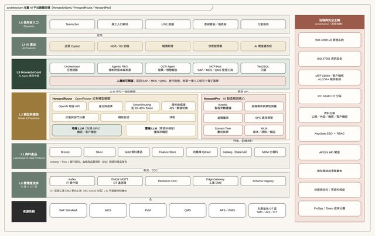
結構圖 Structure（7 種）
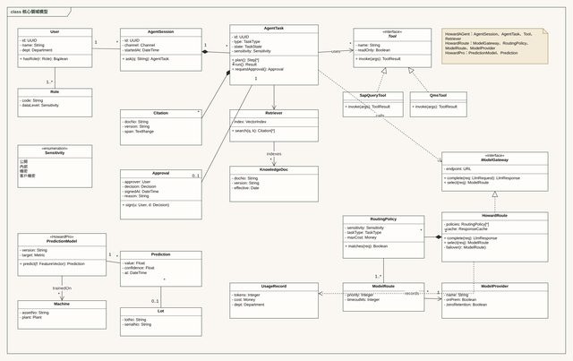
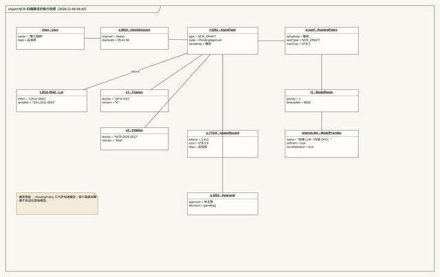
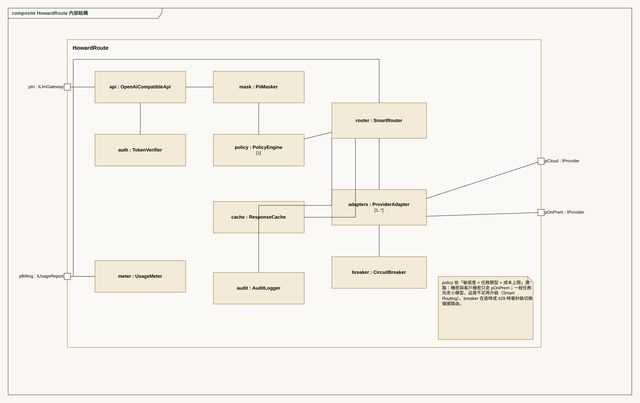
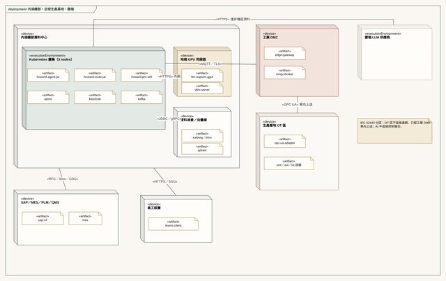
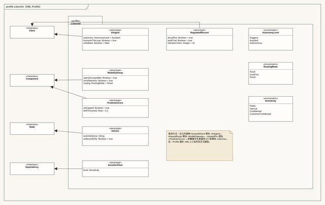
行為圖 Behavior（3 種）
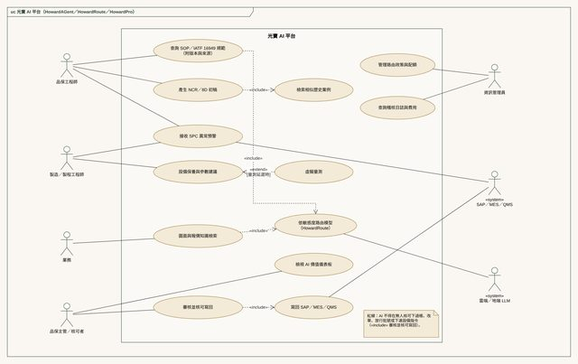
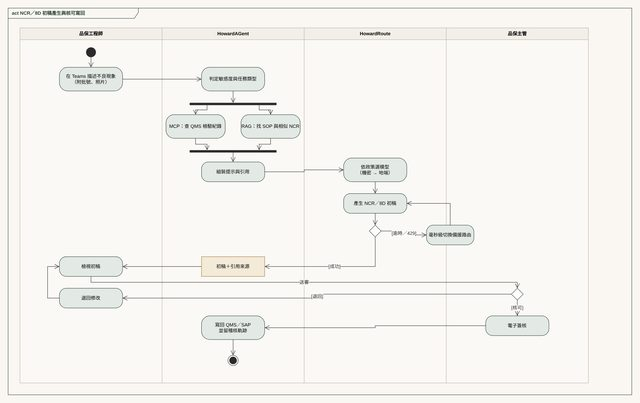
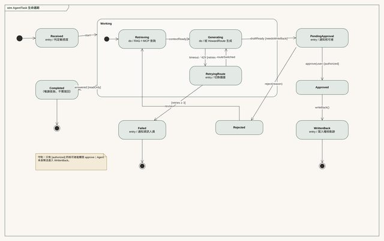
互動圖 Interaction（4 種）

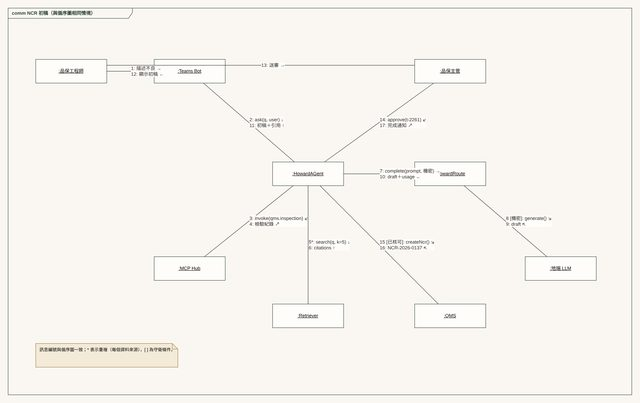
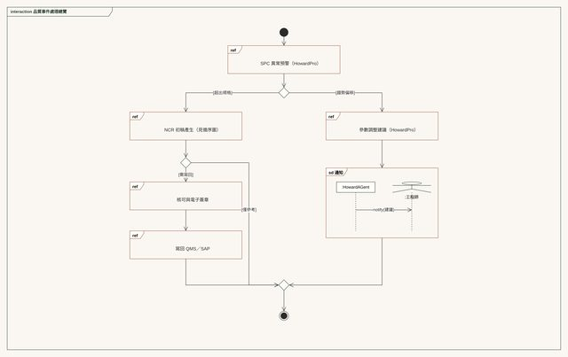
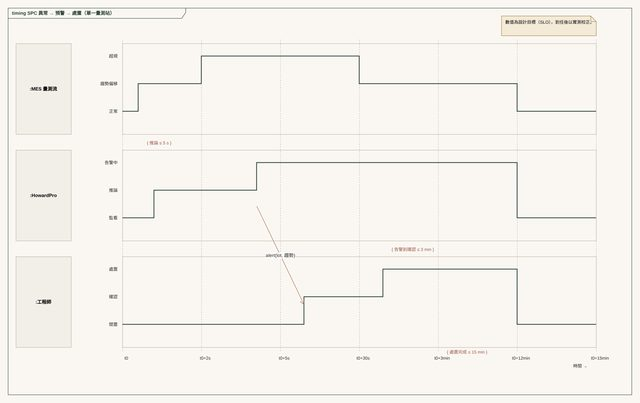
沿著智造價值鏈排的 AI 場景
以「經濟效益 × 可行性 × 可重用」三軸評分。A 為優先投入、B 為第二波、C 為數週內可見成果的快速勝利。
SPC／AOI 異常預警
訂閱 MES、AOI 與測試站資料流，偵測趨勢偏移，在超規前提醒工程師。
設備預防保養
以置件機、回焊爐與測試機台的運轉資料預測保養時點，減少非計畫停機。
缺料、替代料與呆滯預警
結合 S/4HANA 訂單、庫存、APS 與 PLM 變更，提早發現缺料、替代料機會與呆滯料。
NCR／8D 初稿 Agent
彙整檢驗紀錄、相似歷史案例與 SOP，產出 NCR 與 8D 初稿供品保核可。
規格與報價知識檢索
相似規格、歷史報價與工時檢索，縮短報價準備時間；客戶設計圖只走地端模型。
ECN 影響分析
PLM 設計變更自動列出受影響的 BOM、工單、庫存與檢驗計畫。
客戶稽核文件準備助理
依 IATF 16949 與客戶稽核條文找出對應 SOP、紀錄與追溯資料，整理成稽核清單。
虛擬量測與測試時間預測
以製程參數預估關鍵特性與 Burn-in 結果，減少等待；正式放行仍以實測為準。
SOP／規範知識庫
Agentic RAG 回答同仁的 SOP 與表單問題，答案附文件版本與來源。
單據 OCR 自動入帳
發票與單據辨識後產生傳票草稿，會計確認後過帳。
S/4HANA 新流程問答
把 16 項新功能與 27 項流程優化的教材與 SOP 做成知識庫，支援切換後的使用者。
AI 程式審查
內部開發與 SI 交付程式經 AI 審查與 DevSecOps 品質關卡。
AI 治理：以 ISO 27001 為底，延伸到 ISO 42001 與客戶稽核
| 面向 | 機制 | 依據 |
|---|---|---|
| 資料分級 | 公開／內部／機密／客戶機密四級；客戶設計圖、報價與配方不送未核准的外部模型 | ISO 27001、各國個資法 |
| 模型風險 | 上線前評測正確率、幻覺率；回答強制附來源；高風險用例人工複核 | ISO 42001、NIST AI RMF |
| 電子紀錄 | AI 產出的建議與人員核可都留稽核軌跡；Bronze 層只增不改 | IATF 16949、客戶稽核、ALCOA+ |
| OT 安全 | AI 不直接控制機台；參數建議經 MES 與工程師核可後執行 | IEC 62443 |
| 權限稽核 | 模型網關統一身分驗證、遮罩、完整日誌；Token 依事業群分攤 | 零信任 |
| 供應商 | 合約明訂資料不得用於訓練、資料留存地點與刪除時限 | ISO 27036 |

AI 優先導入領域與用例組合
Value × feasibility × reusability
效益情境試算（示意）
以下為說明決策邏輯的示意模型，數字為架構決策示意模型；到任後以財務長確認的基準值取代。
資料與整合底座實施藍圖（蜂巢計畫）
Project Hive: one API platform, one lakehouse
把內湖總部、台灣與海外工廠（先以新廠為試點）串成一個 API 平台與一座資料湖倉。在 S/4HANA 的 Clean Core 之外，接通 MES、PLM、QMS、APS 與機台資料，作為 BI、KPI、批號追溯與 AI 應用的共同底座。
範圍與治理原則
跨事業群資訊架構升級
由 IT AI 平台負責人主導，依 RACI 推動基礎架構、應用系統、品保、事業群 PO、各廠 IT 與 SI／原廠落地。先串資料，再談 AI。
平台負責人負責架構與統籌
負責需求統整、架構規劃、選型審查與進度回報；開發、部署與維運由平台團隊、事業群嵌入團隊與 SI 承接。
選型與預算依盤點定案
SAP 原生、雲端、開源地端三條路線，依現況盤點、法規檢核與 TCO 比較後呈 CIO 核定。
總部統一標準，各廠回饋校正
需求三種來源：總部推動、事業群與各廠需求、經營層年度規劃。報表可依事業群與廠別呈現，背後的料號、批號與指標口徑必須一致。
六階段推進與決策閘門
週數自到任日起算，標籤為進入下一階段前必須完成的裁示。階段 5 期程依選型結果另訂。
現況盤點
清查各廠系統、資料庫、介面、機台連網與窗口名單；遺留客製報表與介面清單。範圍確認
核定首批 API、資料湖納入範圍與試點廠產線。平台選型
比較三條路線，產出 TCO 與建議方案，完成資料落地與法規檢核。PoC 驗證
依驗收標準驗證 S/4HANA↔MES 工單、PLM→S/4HANA BOM 與 BI 取數。建置與驗收
正式環境部署、各廠分批上線、階段驗收。維運交接
維運手冊、分工表生效、SLA 監控上線。前 26 週 WBS 甘特圖
排程為建議值，到任盤點後校正。手機請左右滑動。
與蜂巢計畫同步的 AI 推進節奏
週數自到任日起算。前 10 週適逢 S/4HANA 切換，不碰核心，先做知識類與品質類用例，同時讓資料平台成熟。
盤點與規範
- 盤點影子 AI 使用與既有工具
- 發布 AI 使用規範與資料分級
- 主管 AI 工作流特訓
快速勝利
- SOP／規範知識庫（附來源）
- S/4HANA 新流程問答
- 單據 OCR
品質與製造 PoC
- SPC／AOI 異常預警（試點產線）
- 設備預防保養
- NCR／8D 初稿 Agent
平台化與複製
- 模型網關與 Agent 平台正式上線
- 複製到第二座工廠
- 月度 AI 價值儀表板
網路架構：IT／OT 分區與多廠互連
依 IEC 62443 與 Purdue 模型分區。機台與量測設備留在 OT 區，資料經工業 DMZ 的邊緣閘道往上送；總部與各廠以 SD-WAN 雙線互連，雲端只走私有連線。
OT 設備不直接連外網
機台資料只能經工業 DMZ 的邊緣閘道往上送，雲端與 IT 區不得反向直連機台。
SD-WAN 雙線互連
內湖總部與各廠以 SD-WAN 主線加備援線互連；量測各廠頻寬後設定機台資料與 ERP 流量的優先權。
斷線不停線
邊緣閘道在斷線時把工序與檢驗資料寫入本地佇列，產線照常作業；復網後依時序自動補傳，不重複入帳。
API 平台：五層架構
正常流程
- MES 回報工序完工與良品數
- 邊緣閘道加密轉送
- WAAP 白名單與限流檢查
- API 閘道驗證身分與權限
- 寫入 S/4HANA 工單確認與資料湖
- 回傳成功，產線看板更新
斷線時
- MES 照常回報
- 上傳逾時，邊緣閘道改寫本地佇列
- 回傳「已接收」，產線不停
- 品質資料同樣暫存，不遺失
復網後
- 邊緣閘道偵測復網
- 依時序批次補傳
- S/4HANA 與資料湖依交易編號去重
- 清空佇列，發出補傳完成通知
資料湖倉：三層結構與傳輸節奏
機台與工序資料近即時（分鐘級）上傳；S/4HANA 財務與庫存每日結算；海外據點依頻寬於離峰彙總。
Bronze 原始層
完整保留 S/4HANA、MES、PLM、QMS、機台的原始異動，只能新增、不可修改，作為稽核軌跡的來源。
Silver 清洗層
去重、時間戳統一、料號與批號對齊，關聯產品、機台、客戶主檔；檢查 BOM 版本是否一致。
Gold 主題層
每日結算表、批號／序號正反向追溯表、良率與 OEE、存貨周轉、齊套率、SPC 管制圖資料。
| 資料類型 | 來源 | 傳輸節奏 | 用途 |
|---|---|---|---|
| 機台狀態、加工參數 | SMT／AOI／ICT／測試機台（OPC UA、SECS/GEM） | 每 1–5 分鐘 | OEE、停機分析、預防保養 |
| 工序完工、良品與不良數 | MES | 即時（API） | S/4HANA 工單確認、良率 |
| 檢驗與測試結果 | QMS、AOI、測試站 | 每批完成時 | SPC、出貨放行、客戶稽核 |
| 設計與 BOM 變更 | PLM | 變更核准時 | 同步 S/4HANA 與 MES，避免用錯版本 |
| 訂單、庫存、成本 | SAP S/4HANA | 每日 02:00 結算 | 存貨周轉、毛利、經營看板 |
| 排程與齊套料 | APS、MES | 每班 | 工單排程建議、缺料預警 |
工具選型：三條路線對照
路線 A 貼近 S/4HANA 與 SAP BTP；路線 B 適合已有 Microsoft 授權與 AD 的環境；路線 C 授權費最低但需要維運人力。最終依 D04 呈核。
| 架構層級 | A · SAP 原生 | B · 雲端（Azure） | C · 開源地端 |
|---|---|---|---|
| 邊界防護 | SAP BTP 內建防護＋前端 WAF | Front Door＋WAF、Private Link | Coraza WAF／NGINX、CrowdSec |
| API 閘道 | SAP Integration Suite（API Management） | Azure API Management | Kong Gateway OSS／Apache APISIX |
| 整合與轉換 | Cloud Integration（CPI）、IDoc／OData | Logic Apps、Service Bus | Node-RED／自建服務 |
| 機台資料 | SAP Digital Manufacturing（選配） | IoT Hub／IoT Operations | OPC UA 閘道＋MQTT（EMQX） |
| 資料擷取 | SAP Datasphere 複寫流程 | Data Factory＋自託管整合執行階段 | Debezium CDC／Airbyte |
| 資料湖倉 | SAP Datasphere | Fabric／ADLS Gen2（Delta Lake） | MinIO＋Apache Iceberg＋Trino |
| 排程與對帳 | Datasphere 任務鏈 | Data Factory 管線 | Apache Airflow |
| BI | SAP Analytics Cloud | Power BI | Apache Superset／Grafana |
| 監控追蹤 | SAP Cloud ALM | Azure Monitor | OpenTelemetry＋Prometheus＋Grafana |
遺留客製收斂：既有客製報表與點對點介面分為保留、移轉、淘汰三類，配合 S/4HANA Clean Core 逐步收斂到 API 平台與資料湖倉。
資安與法遵
邊界 WAAP＋旁路 API 安全
邊界 WAAP 在入口即時攔截已知攻擊；旁路 API 安全以流量鏡像分析行為，找出未列管 API 與越權讀取（例如換工單號偷看其他客戶的設計圖），再把封鎖規則回送 WAAP。
IEC 62443 分區與管道
機台 PC 不上網、USB 管控、遠端維護只經跳板主機並錄影；修補先在測試機驗證，避免影響產線。
電子紀錄可稽核
依 IATF 16949 與客戶稽核要求：電子紀錄要有稽核軌跡、電子簽章與保存期限，資料符合 ALCOA+（可歸屬、清楚、即時、原始、正確）。
設計圖與客戶資料不外流
依資料分級決定可上雲與可進 AI 的範圍；客戶設計圖與報價採列級權限與遮罩；海外據點依當地個資與資料在地化規定。
第一階段 9 項任務
| # | 工作項目 | 主要工作內容 | 交付產出 | 階段 |
|---|---|---|---|---|
| 1 | 現況與需求盤點 | 各廠系統、資料庫、介面、機台連網與遺留客製 | 現況清單、需求清單、窗口名單 | 1 |
| 2 | API 平台規劃與建置 | 盤點既有介面，確認首批串接（S/4HANA↔MES 工單、PLM→S/4HANA BOM） | API 清單、平台方案 | 2→5 |
| 3 | 資料湖倉規劃與建置 | 確認資料納入範圍、分層、保存期限與權限 | 資料來源清單、湖倉方案 | 2→5 |
| 4 | 平台選型與成本評估 | 比較 SAP 原生、雲端、開源地端三條路線 | 選型比較表、TCO、建議方案 | 3 |
| 5 | 機台與系統資料串接 | 試點產線機台連網、擷取方式與對來源系統的效能影響 | 串接規格、資料管線、測試結果 | 2→5 |
| 6 | 每日結算與批號追溯 | S/4HANA 日結、對帳規則、批號／序號正反向追溯、失敗補跑 | 結算規則、追溯表規格 | 2→5 |
| 7 | 網路與資安配套 | IT／OT 分區、SD-WAN、雲端連線、權限與稽核需求 | 網路架構、資安需求清單 | 3 |
| 8 | PoC 與階段驗收 | 依驗收標準驗證首批串接、對帳與 BI 取數 | PoC 報告、問題清單 | 4 |
| 9 | 執行與維運分工 | 確認平台團隊、各廠 IT、品保、製造與 SI 的建置與維運責任 | 分工表、交接清單 | 6 |
RACI 責任矩陣（初稿，待 CIO 確認）
| 任務 | CIO（發起人） | AI 平台負責人 | 基礎架構／OT | 應用系統（SAP／MES） | 品保／法遵 | 事業群 PO／製造 | SI／原廠 |
|---|---|---|---|---|---|---|---|
| 1 現況與需求盤點 | A | R | C | C | C | C | — |
| 2 API 平台規劃與建置 | I | A | C | R | I | C | R |
| 3 資料湖倉規劃與建置 | I | A | C | R | C | I | R |
| 4 平台選型與成本評估 | A | R | C | C | C | I | C |
| 5 機台與系統資料串接 | I | C | R | A | I | R | R |
| 6 每日結算與批號追溯 | I | C | I | A | R | C | R |
| 7 網路與資安配套 | I | C | A | C | C | C | R |
| 8 PoC 與階段驗收 | A | R | C | R | C | C | C |
| 9 執行與維運分工 | A | R | C | C | I | C | I |
R 執行 · A 最終負責 · C 諮詢 · I 知會。每項任務只有一位 A。
PoC 驗收標準
| 驗收項目 | 通過門檻（建議值，D01 時確認） | 對應任務 |
|---|---|---|
| S/4HANA↔MES 工單同步 | 試點產線工單下達與完工回報全部自動化，無人工轉檔 | 2、5 |
| PLM→S/4HANA BOM 變更 | 設計變更核准後 1 小時內同步至 S/4HANA 與 MES，版本一致 | 2 |
| 批號／序號追溯 | 任一成品批號 5 分鐘內查出原料、機台、檢驗與出貨對象 | 6 |
| 每日結算對帳 | 連續 10 個工作日差異筆數為 0 | 6 |
| 斷線補傳 | 模擬廠區斷線 4 小時，恢復後自動補傳且無重複 | 5、7 |
| 來源系統影響 | 擷取期間 S/4HANA 與 MES 回應時間增加 ≤ 10% | 5 |
| BI 取數 | 既有報表可改由資料湖倉取數且數值一致 | 8 |
| 稽核軌跡 | 所有寫入 S/4HANA 的 API 交易可追溯操作者、時間與內容 | 2、7 |
主要風險與緩解
| 風險 | 影響 | 緩解措施 |
|---|---|---|
| S/4HANA 切換期 | 整合做在切換中的核心上，需要重做 | 切換凍結期只做盤點與知識類用例；介面一律走 API 閘道，降低對核心版本的依賴 |
| 各廠機台品牌與年份不一 | 連網成本與時程膨脹 | 盤點控制器型號；首批只選一個試點廠的一條產線 |
| 客戶稽核與 IATF 16949 | 電子紀錄不符要求，影響客戶認證 | 品保參與 PoC；驗收納入稽核軌跡與電子簽章 |
| 遺留客製盤點不全 | 收斂後遺漏報表或介面 | 新舊並行一段時間，資料完整轉出後才下線 |
| 同仁兼任工作過量 | 日常支援與專案互相排擠 | D02 明定窗口與每週投入時數；日常支援優先 |
| 維運承接未定 | 上線後無人負責 | D05 在 PoC 前確定，承接者參與 PoC |
待 CIO 裁示的 6 項決策
第一階段優先範圍
建議：只做底座（API＋資料湖倉＋首批串接），BI 優化放第二階段。卡住任務 2、3、5、6。
跨部門對接窗口
建議：基礎架構、應用系統、品保、製造、財務與試點事業群各一位專責窗口。卡住任務 1。
試點廠與產線
建議：以越南新廠或高雄二期的一條主力產線試點，無歷史包袱、法規與資料量具代表性。卡住任務 5、8。
預算範圍與路線
建議：先核定 PoC 預算，正式建置預算於 PoC 後核定。卡住任務 8 及階段 5。
開發與維運承接
選項：平台團隊、SI 廠商或混合。建議 PoC 前確定並讓承接者參與。卡住任務 8、9。
雲端主區與在地留存
建議：先完成客戶合約、法規與各國資料在地化檢核，再決定台灣在地或區域雲端。卡住任務 3、4、7。
第二階段應用
進入條件：PoC 驗收通過，且試點產線連續 30 天每日結算無差異。第一階段只蒐集需求，不同步建置。
| # | 工作項目 | 主要工作內容 | 依賴的資料底座 |
|---|---|---|---|
| 10 | BI 戰情室 | 各事業群、各廠用同一套指標呈現庫存、良率與停機 | Gold 主題層 |
| 11 | KPI 系統化 | 統一指標定義、計算口徑、更新頻率與負責人 | 每日結算資料 |
| 12 | 品質與 SPC | 製程能力（Cpk）、管制圖、不良根因分析 | 機台與量測資料 |
| 13 | AI／RAG 製程知識庫 | 保存資深工程師經驗，問答時遵守資料分級與權限 | 文件知識庫＋權限模型 |
| 14 | AI 主機與硬體評估 | 依應用需求評估地端推論主機或雲端服務 | 依 12、13 結果 |
| 15 | 遺留客製退場 | 最後一批客製報表與介面移轉或封存 | 移轉清單與封存區 |
AI 組織、人才梯隊與 PO 學院
Central platform + embedded business teams
| 團隊 | 職責 | 關鍵角色 | 第一年人數（初估） |
|---|---|---|---|
| AI 平台工程 | 模型閘道、Agent 編排、MLOps／LLMOps、監控 | 平台技術主管、平台工程師、SRE | 6–8 |
| 資料產品 | 湖倉、主資料、特徵庫、資料契約 | 資料技術主管、資料工程師、資料架構師 | 5–7 |
| AI 應用與科學 | 模型開發、評測、RAG 調校 | ML 技術主管、資料科學家、AI 工程師 | 5–7 |
| AI 治理與資安 | ISO 42001、模型風險、資料分級 | 治理經理（與資安處協作） | 1–2 |
| 事業群嵌入 | 用例落地、流程再造 | BU PO、業務分析師、Champions | 由 BU 編制 |
L1 素養與個人應用
AI 使用規範、資料分級、驗證習慣；主管 AI 工作流特訓。
產出：人人會用、知道什麼不能做
L2 部門流程與 Agent
每部門挑 1–2 個流程，由業務擔任 PO、IT 提供平台。
產出：可量測的部門用例
L3 跨部門再造與普及
跨部門 Agent 串接、共用知識庫、Champions 網絡。
產出：組織層級的效益
AI 治理、資安與風險
Build on ISO 27001, extend to ISO 42001
| 面向 | 機制 | 標準 |
|---|---|---|
| 資料分級 | 公開／內部／機密／客戶機密四級；決定可上雲、可進模型的範圍 | ISO 27001、個資法 |
| 模型風險 | 上線前評測正確率、幻覺率與偏差；高風險用例需人工複核 | ISO 42001、NIST AI RMF |
| 權限與稽核 | 模型閘道統一身分驗證、遮罩與完整日誌 | 零信任 |
| OT 安全 | AI 不直接控制設備；建議經 MES 與人員核可後執行 | IEC 62443 |
| 供應商 | 合約明訂資料不得用於訓練、資料留存地點 | ISO 27036 |
| 主要風險 | 緩解措施 |
|---|---|
| 與 S/4HANA 上線搶資源 | 2027 Q1 前只做不碰 SAP 的用例（品質、研發知識） |
| 資料品質不足 | 先做資料產品與口徑統一，再做模型 |
| PoC 停在 PoC | 開始前就定義上線條件、PO 與損益科目 |
| 影子 AI | 提供好用的官方平台＋使用規範，而非只禁止 |
| 算力成本失控 | Token／GPU 按 BU 分攤、配額與月報 |
AI 架構作品集
Architecture & case library
上一節的 16 個 AI 架構與顧問專案，共用同一套架構骨幹；這套骨幹也是本頁企業級 AI 平台藍圖的來源。下圖整理骨幹分層，矩陣標出各專案用到哪些模式。
共用架構骨幹
架構模式 × 專案矩陣
| 架構模式 | 生醫 AI | 服務代理 | AI 平台規劃 | 大型零售 AI | 成衣集團 | 醫材跨廠 | 多雲製造 | 在宅醫療 | 製藥資安 | 資安長 | 治理標準化 |
|---|---|---|---|---|---|---|---|---|---|---|---|
| 多模型閘道與 Agent 編排Gateway & orchestration | |||||||||||
| 資料匯流與湖倉Data bus & lakehouse | |||||||||||
| 階段閘門推進Stage-gate delivery | |||||||||||
| 人員核可Human-in-the-Loop | |||||||||||
| AI 治理與合規ISO 42001 & regulation | |||||||||||
| 資安與韌性Zero trust & resilience | |||||||||||
| FinOps 與投資回收Cost & ROI | |||||||||||
| AIDC 算力與推論叢集AIDC & vLLM cluster |
四大核心架構中樞與蜂巢資料底座
不動 SAP 核心、不重造 MES/PLM。站在三大巨石系統旁邊讀取資料、智慧預測，以 API 與事件流提供共用能力。
MCP 工具中樞、Agentic RAG 規範檢索、Human-in-the-Loop 關鍵人機複核
LiteLLM 相容、Smart Routing、Token 級 FinOps 成本治理、毫秒級自動備援
K8s GPU Operator、MIG 虛擬切片、vLLM PagedAttention、私有模型特化微調
Clean Core 攻堅、替代料智能選用、工單齊套料即時預警、AutoML 設備保養
- 基於 MCP (Model Context Protocol) 將 S/4HANA、MES、PLM 封裝為標準唯讀工具。
- Agentic RAG：檢索 IATF 16949 規範、SOP、客戶合約，強制輸出版本號與法規依據。
- 跨部門協同 Agent：HR 履歷初篩、財務帳單對帳、採購多方詢比價。
- 品質 Copilot：SPC 異常原因分析、NCR 初稿與 8D 矯正報告自動編撰。
- ISO 42001 (AIMS)：上線前進行防幻覺、偏差與提示注入（Prompt Injection）評測。
- Human-in-the-Loop：AI 產出嚴格定義為「建議」，寫回 ERP/MES 必須工程師電子簽核。
- 資料最小化：敏感欄位自動脫敏與動態遮罩，機密商業圖面絕不送未授權外部模型。
- ALCOA+ 稽核軌跡：每一次 Agent 呼叫、推理鏈與審核紀錄永久保存。
蜂巢計畫 (Project Hive)：API 整合平台與資料湖倉實施底座
在 SAP S/4HANA Clean Core 之外，接通 MES、PLM、QMS、APS 與現場機台資料，作為全集團 BI 戰情室、批號正反向追溯與 AI 應用的共同底座。
| 湖倉分層 | 資料來源 | 傳輸節奏 | 關鍵職能與商業價值 |
|---|---|---|---|
| Bronze 原始層 | S/4HANA、MES、PLM、機台 | 近即時 (分鐘級) | 不可篡改之原始異動資料，唯一只增不改，作為法規稽核 ALCOA+ 唯一憑證。 |
| Silver 清洗層 | Kafka CDC / MQTT 匯流排 | 1~5 分鐘 | 去重、時間戳統一、料號與批號對齊，防範料號錯置與跨廠規格混淆。 |
| Gold 主題層 | 資料契約與主資料中樞 | 每日 02:00 結算 | 每日營運結算表、批號/序號全生命週期正反追溯表、良率/OEE 與 SPC 管制圖。 |
UML 2.x 全 14 種架構模型互動圖庫
點選任意架構圖可即時彈出高清原圖燈箱，詳閱品保、資安分區、狀態機與循序流細節。
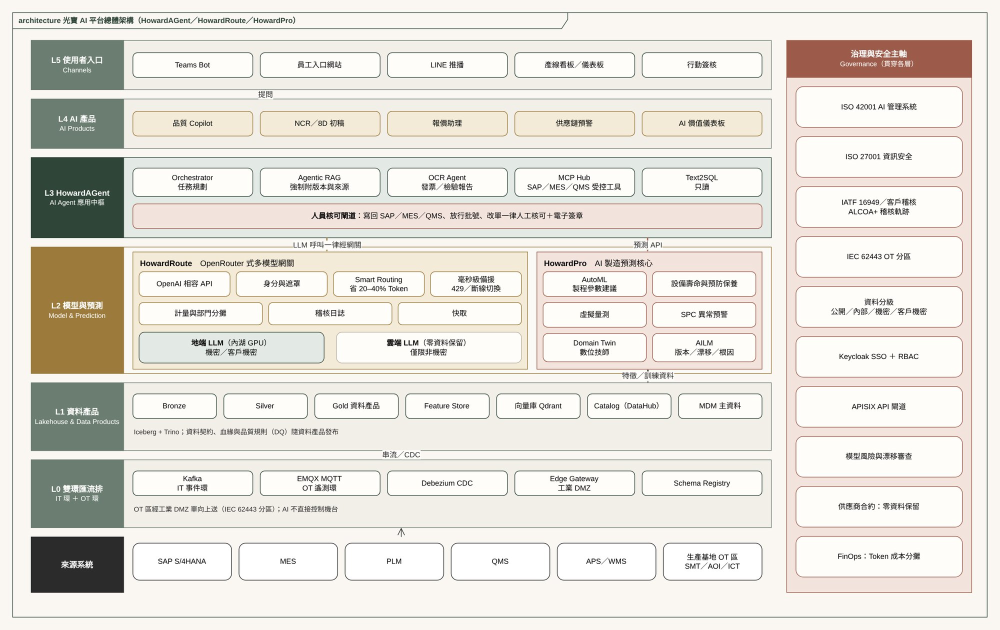
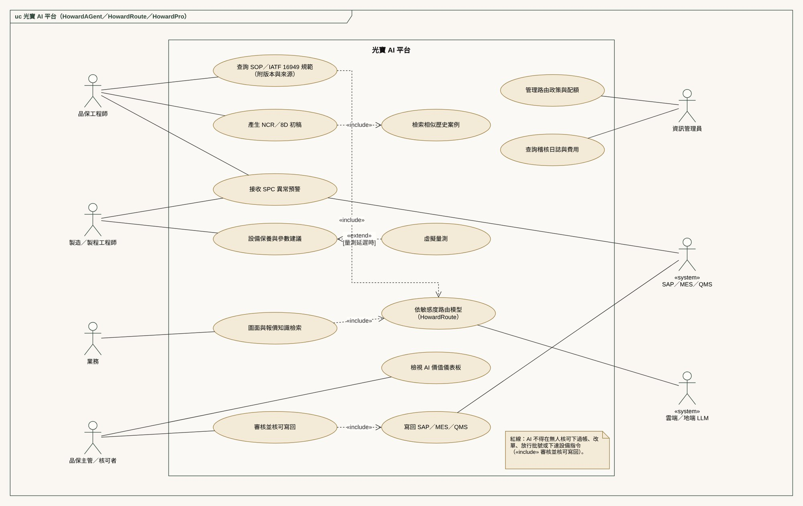
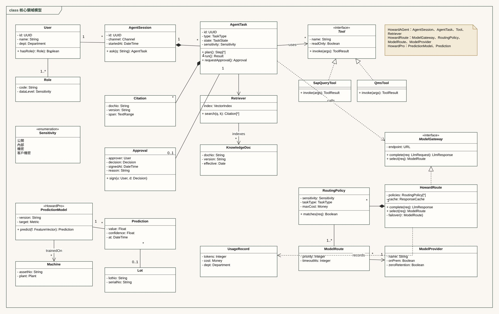
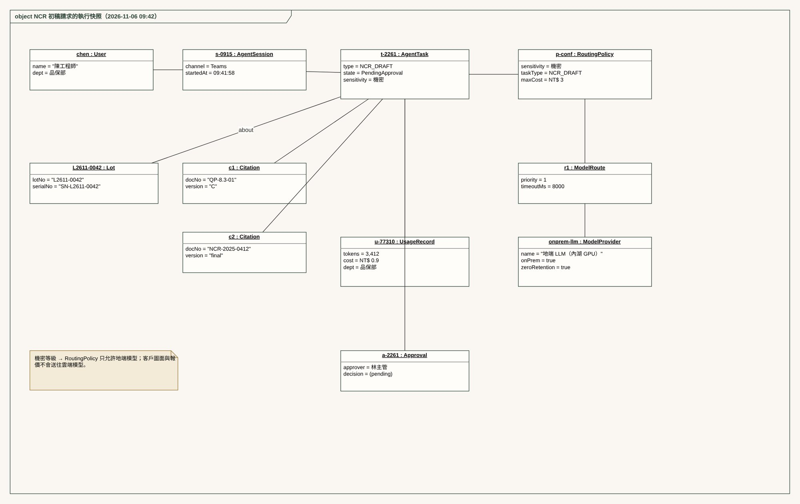
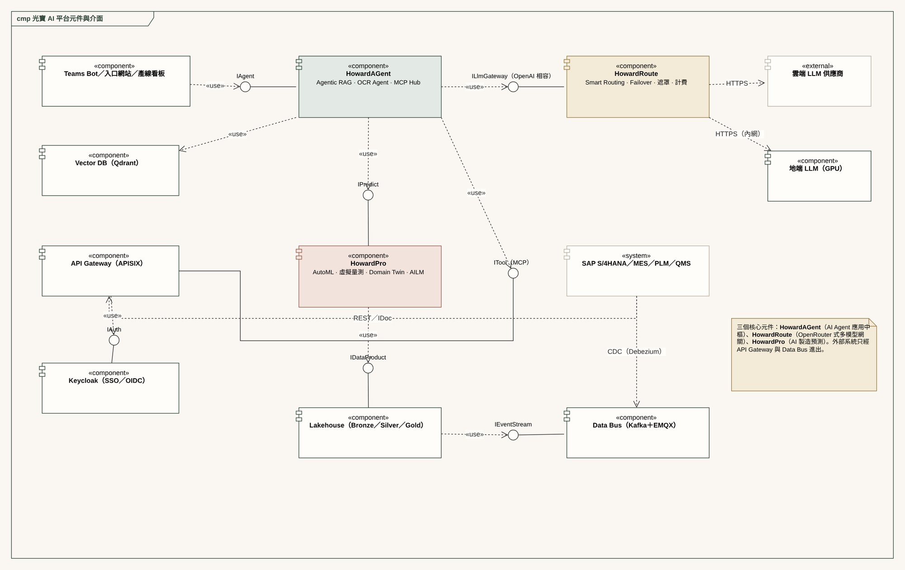
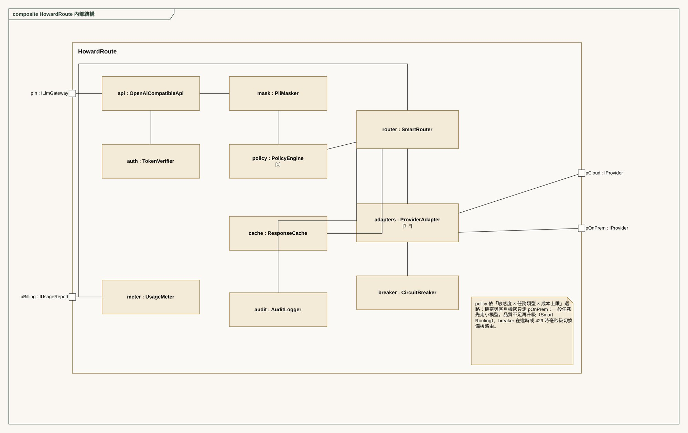
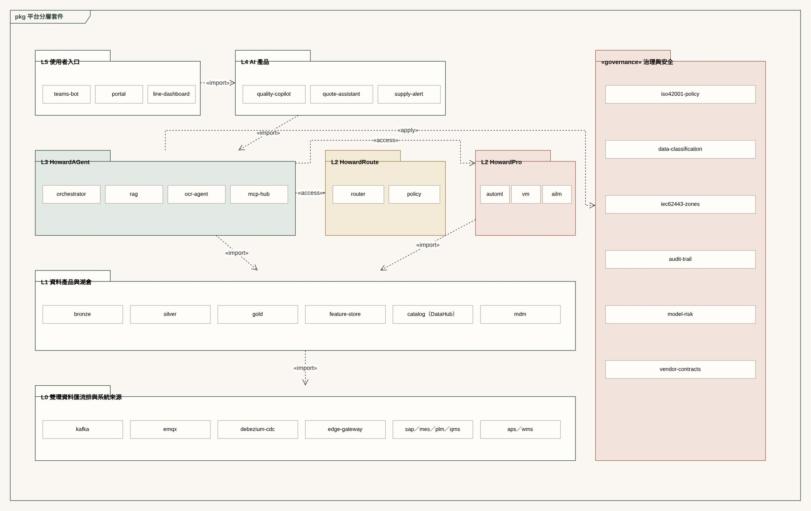
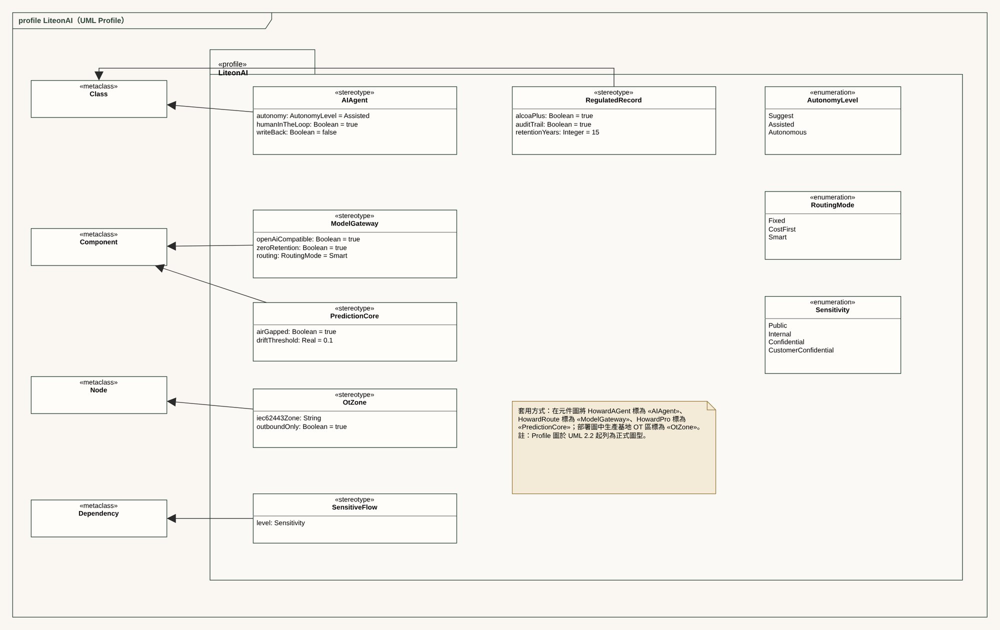
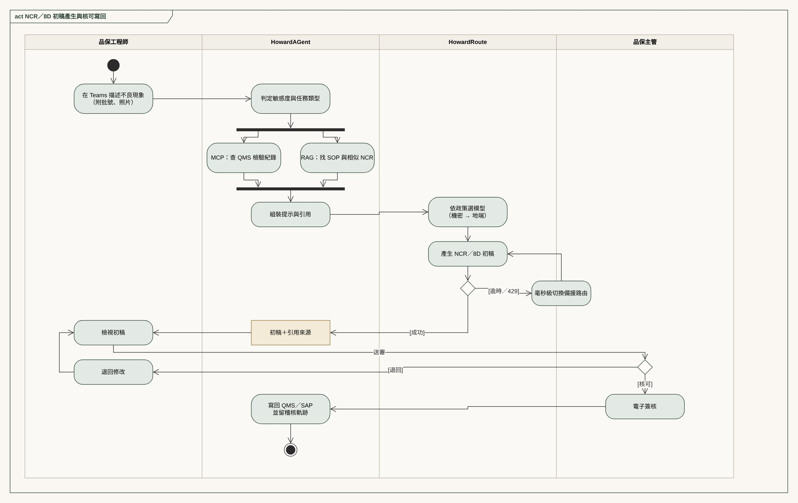
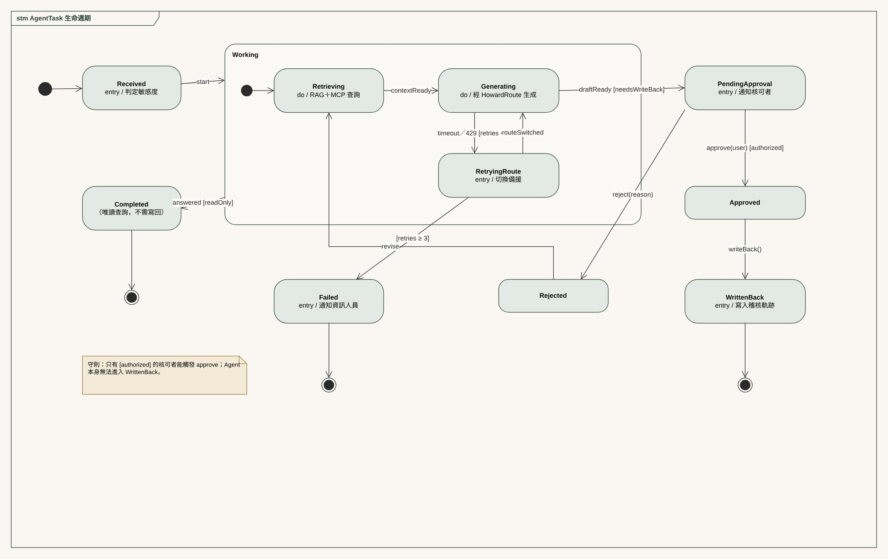
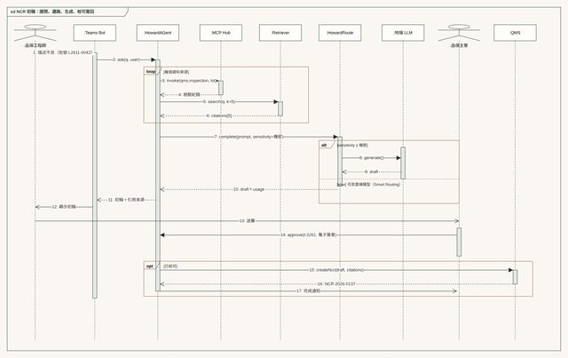


27 年 IT 領導歷練與任職紀錄
深耕高科技製造、上市櫃數位娛樂、大型電商、外商軟體與系統整合之實戰職涯。
副總 暨 IT Director（直報 Global CIO）— 全球應用治理與交付
- 統籌集團高雄、台北、上海三地研發中心之全球企業應用治理與產品交付，帶領 30 人以上跨職能團隊。
- 制定集團 3 年企業應用地圖，全權治理年度 IT 預算最高 1,000 萬美元（CAPEX/OPEX）與跨國 SI/顧問供應商。
- 主導推動 SAP S/4HANA Clean Core，客製程式碼減少 35%，核心業務標準流程覆蓋率提升至 90% 以上。
- 親自主持架構審查委員會（ARB），訂定 Java／Spring Boot API-first 與 Kafka／EDI／IDoc 跨國整合標準。
- 導入 DevSecOps 品質關卡（SAST/DAST/SBOM）與 AI 輔助程式碼審查，交付 Lead Time 縮短 40%、缺陷逃逸率降低 35%。
IT Director（資訊、資安與資料平台主管）
- 負責集團多雲基礎設施、資訊安全防護與巨量即時資料平台，領導橫跨台灣、中國與海外之技術維運團隊。
- 主導核心服務自傳統虛擬機遷移至 Google Kubernetes Engine (GKE) 容器化與 CI/CD 自動化，發布週期縮短 50%。
- 將核心交易與高併發遊戲資料遷移至 MongoDB Atlas 跨區雙活叢集，支撐海外百萬級玩家即時在線，任內創下連續 24+ 個月 100% Zero Outage 零重大停機。
- 推行嚴謹 FinOps 成本治理，多雲總持有成本（TCO）大幅降低 30%，本專案獲 Google Cloud 官方選為 APAC 全球客戶成功案例並拍攝影音專訪。
- 依 NIST CSF 2.0 建立 ISO 27001 資訊安全管理系統與零信任架構，重大資安事故與 MTTR 降低 30%。
中央資訊 技術處長（系統營運統籌）
- 直報集團中央資訊高階主管，專責全集團架構解決方案選項決策與 SWOT 差距分析。
- 在「業務戰略轉化為技術戰略」方面發揮關鍵樞紐作用，並定義支持戰略落地的端到端技術架構。
- 依據集團全球營運模式與內部業務實況，制定集團數位轉型推動藍圖與進程計畫。
- 統籌跨廠區企業應用與系統架構評審委員會，建立製造 IT 標準化治理範本。
技術／大數據／人工智能部 資深總監（職等 13）
- 主導巨量交易大型電商平台之微服務解耦工程，由傳統單體成功過渡至分散式高可用架構。
- 規劃即時巨量交易數據中樞，支撐雙 11 與大型促銷檔期數十萬 QPS 瞬間峰值流量。
- 落實資料治理與大數據風控邊界，建立內部風控與高可用交易審計日誌。
資訊長 暨 資安長 (CIO / CISO)
- 主導集團多廠區 SAP S/4HANA 導入，堅持以標準功能優先、杜絕過度客製，緊密串接 MES、PLM、APS 打通自訂單到現場工單全流程數據鏈。
- 建置 Edge AIoT 數據中台，涵蓋上千台 SMT 與組裝設備；導入機器學習不良預測與預防保養模型，關鍵產品良率提升 15%、整體設備效率 (OEE) 提升 18%。
- 依 IEC 62443 與 ISO 27001 規劃 OT/IT 網路分段與身分存取控制，杜絕勒索病毒橫向擴散。
- 建立與國際一線品牌客戶的 B2B EDI 供應鏈自動化對接體系。
資訊科技副總 暨 數位轉型總監
- 掌管軟體研發中心、巨量資料應用與數位轉型業務，帶領 50 人以上跨職能敏捷團隊。
- 主導核心系統由傳統單體重構為 Java／Spring Cloud 微服務與 API-first 架構。
- 建立 TDD 測試驅動、SonarQube 靜態分析與 CI/CD 標準管線，新產品交付 Lead Time 縮短 40% 以上。
- 主持大型 B2B 客戶數位平台之架構審查與非功能需求驗收，SLA 維持 99.95% 以上，榮獲國家優秀 IT 經理人案例。
大中華區資深技術經理 / 產品服務負責人
- 負責 Borland 與 Sybase 在大中華區之應用生命週期管理（ALM）與企業資料庫解決方案顧問交付。
- 深入兩岸三地大型金融機構（核心帳務、證券交易）、電信龍頭與高科技製造客戶，主持高併發交易效能調校與 HA/DR 災備架構。
- 主持 30 餘個大型企業系統改造專案，多次受邀擔任大中華區技術年會講師。
資深系統架構師 / 專案經理 (PMP)
- 擔任核心系統架構師與專案經理，承接政府部會、國營事業與金融機構之 J2EE/Java 分散式交易系統與大型入口網站。
- 嚴格依 PMBOK 管理專案範疇、時程、預算與交付風險，帶領 20 人以上跨職能研發團隊，系統可用性達 99.9%。
董事 兼 資訊長 (CIO) 數位公益與 ESG 實踐
- 以企業級雲端技術、資安架構與 AI 專業回饋社會，協助基金會建立「便當童話劇」兒童飲食健康宣導系統。
- 規劃建置公益捐款安全防護網與醫療資訊串接，具體落實企業社會責任（CSR）與 ESG 永續精神。
六大旗艦架構與資安實戰案例
STAR 架構深度剖析：面對極端商業情境、關鍵架構抉擇、可量化商業成果與第三方實體佐證。
跨國百萬高併發手遊平台 GKE 遷移與 Zero Outage
高科技電子製造 Edge AIoT 與不良預測大數據平台
跨國多雲 FinOps 治理與總持有成本縮減 30%
企業專有模型網關與 ISO/IEC 42001 (AIMS) 體系
SAP S/4HANA Clean Core 轉型與客製代碼瘦身
DevSecOps 軟體供應鏈安全與 AI 程式碼審查
媒體專訪、原廠案例與演講出處
公開報導、原廠大會 Keynote、公部門數位課程、國際專業證照與權威學術期刊之完整實體佐證鏈 (共 20 筆公開資料)。
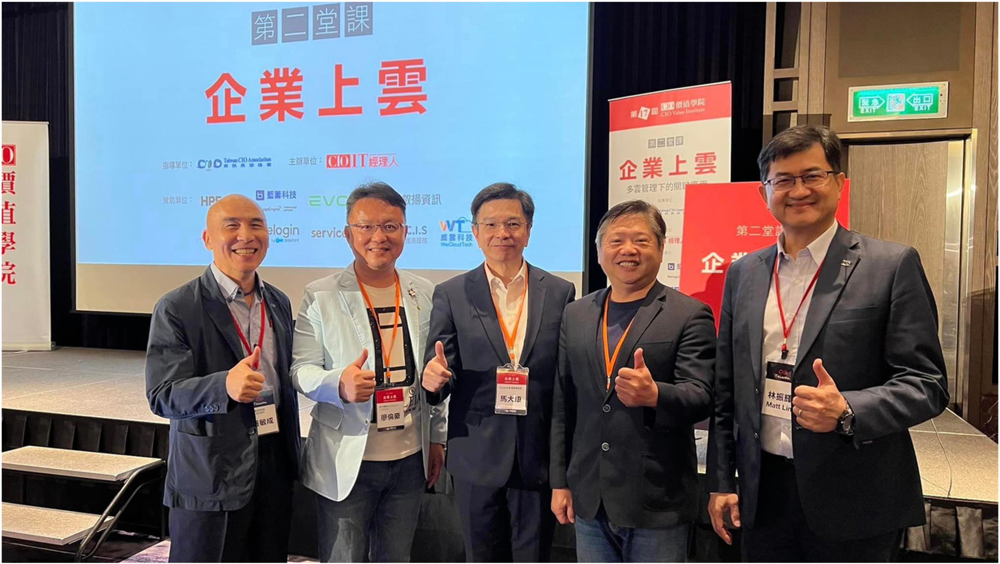
Google Cloud 官方全球客戶成功案例：隆中網絡顛覆全球玩家遊戲體驗
隆中網絡運用 GKE 和 Cloud Load Balancing 升級遊戲體驗。全球遊戲平台運營企業隆中網絡 (GameSparcs) 專注於為玩家帶來創新遊戲體驗，透過 Google Cloud 實現全球玩家高併發低延遲連線與 100% Zero Outage。
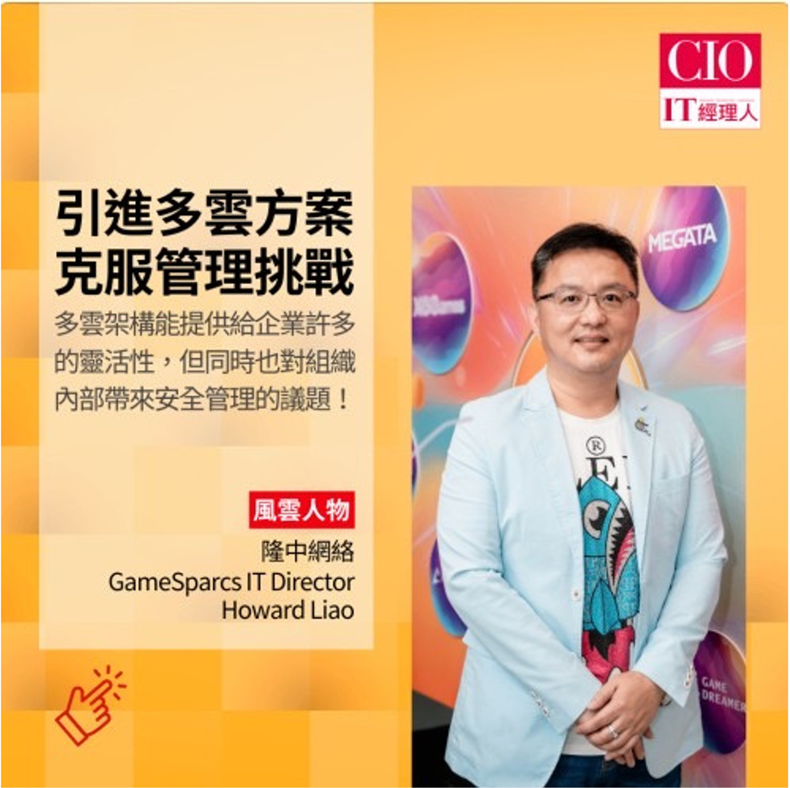
CIO Taiwan 雜誌專訪：善用公有雲服務 搶攻全球遊戲商機
專訪報導隆中網絡 IT Director 廖倫豪博士指出，遊戲產業使用雲端服務可帶來降低成本、提高效率、擴大發行範圍與提升玩家體驗四大好處，並建議採用多雲網路 (MCN) 與 Kubernetes 原生架構橫跨公有雲與邊緣運算。

《CIO IT 經理人》封面專題：跨公有雲與邊緣的統一管理實務
深入報導廖倫豪博士如何統籌多雲架構、實施 FinOps 雲端成本監控與治理，以及帶領跨國團隊構建極限高可用（HA）架構的心法。
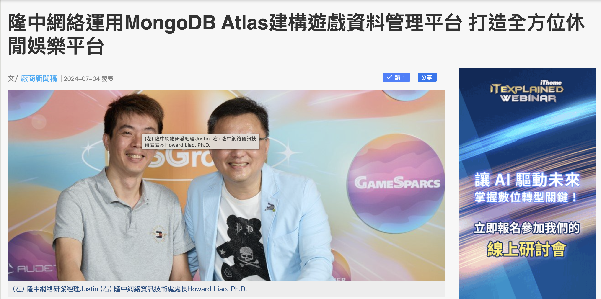
iThome 專題企劃：運用 MongoDB Atlas 建構遊戲資料管理平台
文／iThome 專題企劃：隆中網絡 IT Director 廖倫豪博士指出，引進 MongoDB Atlas 全託管雲端資料庫平台，兼具高擴展性與 99.995% 高可用性，成功支撐全球跨區高併發讀寫需求，奠定長期競爭力。
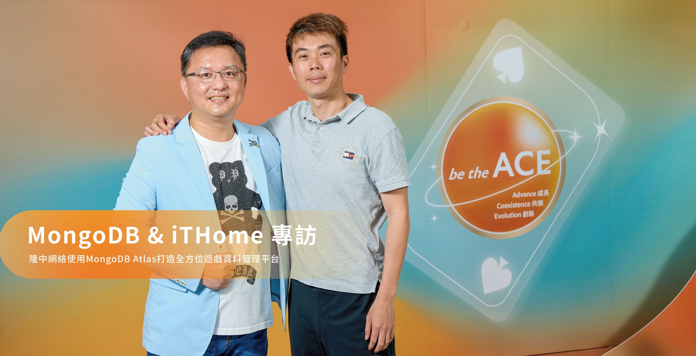
MongoDB.local Taipei Keynote 大會主講《運用 MongoDB Atlas 建構全球規模遊戲資料管理平台》
受邀擔任 MongoDB.local 年度旗艦大會 Keynote 演講嘉賓，於台北萬豪酒店大會主舞台發表專題演講，現場獲得逾 500 位企業 IT 領袖與架構師熱烈迴響。
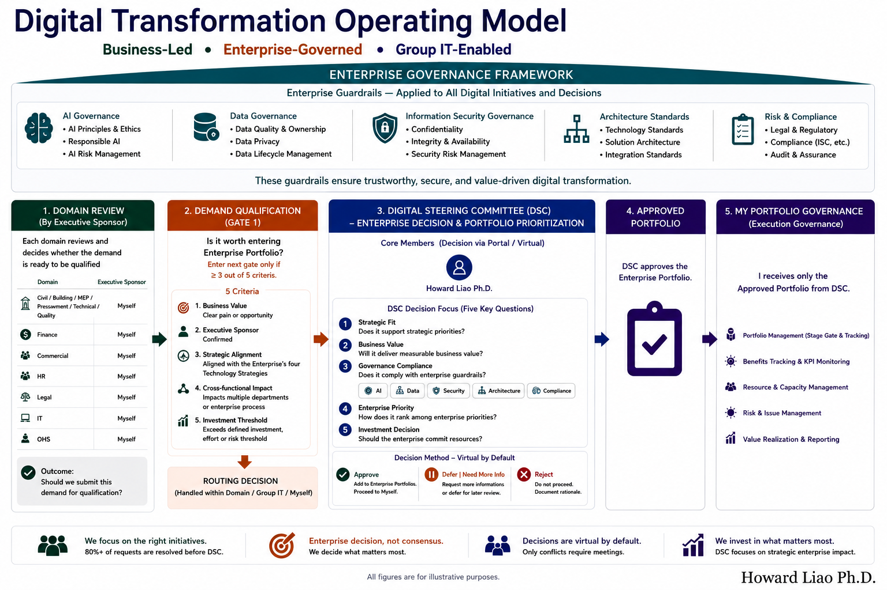
CIO Taiwan 價值學院第十七屆大會 Keynote 演講《洞見機遇-雲端管理與實務》
廖倫豪博士受邀擔任 Keynote 主講人，向與會上市櫃企業 CIO 與 CISO 分享多雲資源治理、安全合規與 FinOps 實務落地心法，現場反應熱烈。
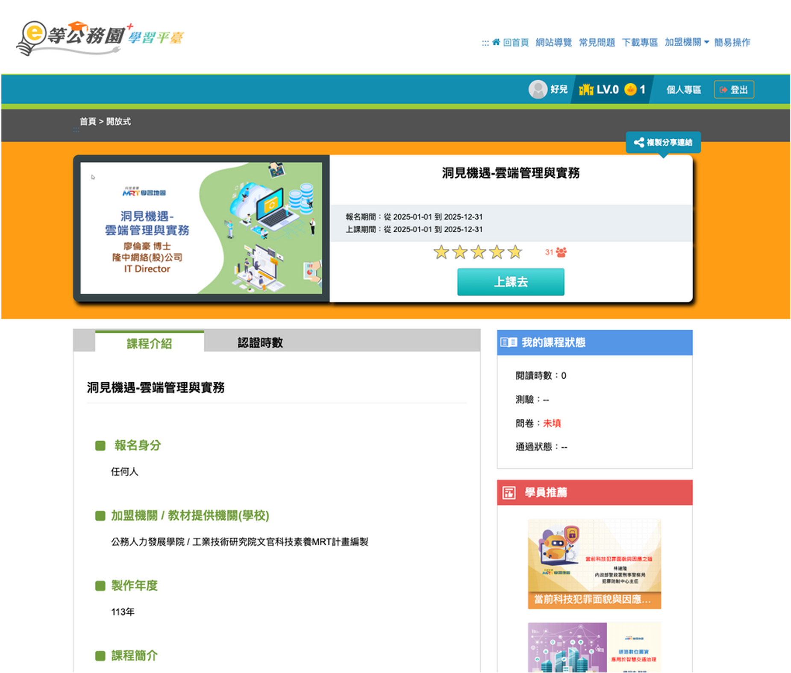
行政院人事行政總處 e等公務園+《洞見機遇-雲端管理與實務》大師講座數位課程
廖倫豪博士受邀擔任行政院大師講座講師，錄製《洞見機遇-雲端管理與實務》數位課程，列入公部門數位學習資源共享平台，推廣公部門雲端轉型與現代化資訊治理思維。
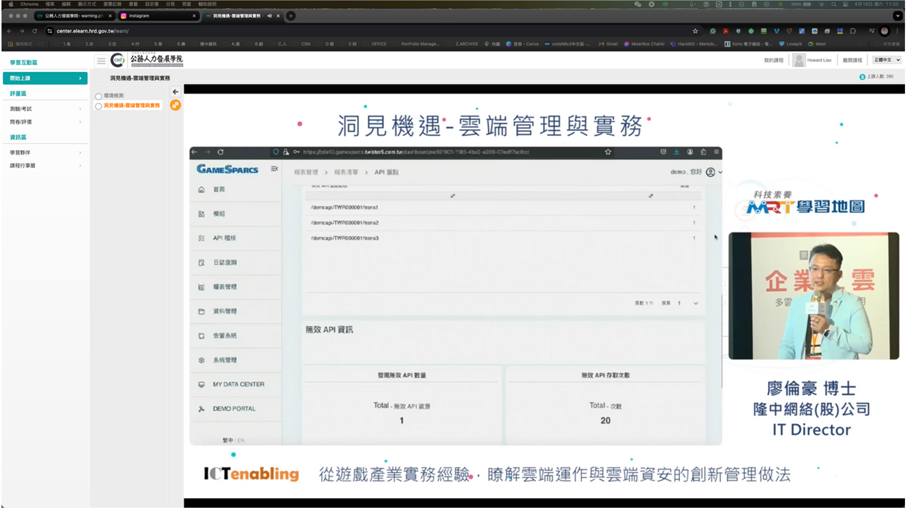
行政院 e等公務園+ 大師講座《雲端管理與實務》課綱與授課紀錄
行政院大師講座官方課程系統登錄，涵蓋雲端架構選型、多雲高可用治理、跨機關資訊安全與合規防禦之完整教學大綱。
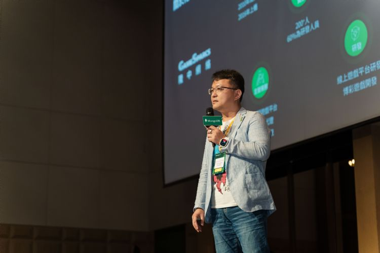
DIGITIMES 科技網報導：MongoDB 8.0 問世，助企業接軌生成式 AI (隆中網絡等企業案例)
DIGITIMES 科技網深度報導 MongoDB 8.0 發表會，提及隆中網絡等企業成功應用案例與演講重點，剖析多模型時代資料庫中台的架構躍遷。
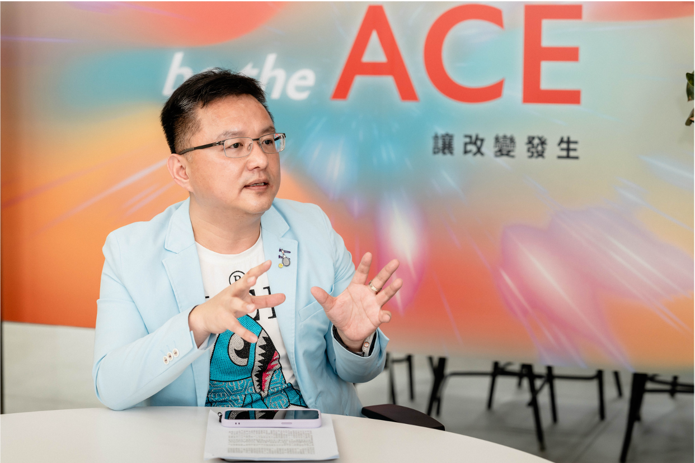
ACE 專案專訪：高可用多雲架構與全球高併發連線營運的極限挑戰
深入探討分散式雲原生架構、跨多區域負載均衡技術與創下連續 24+ 個月 100% Zero Outage 零重大中斷之關鍵工程架構。
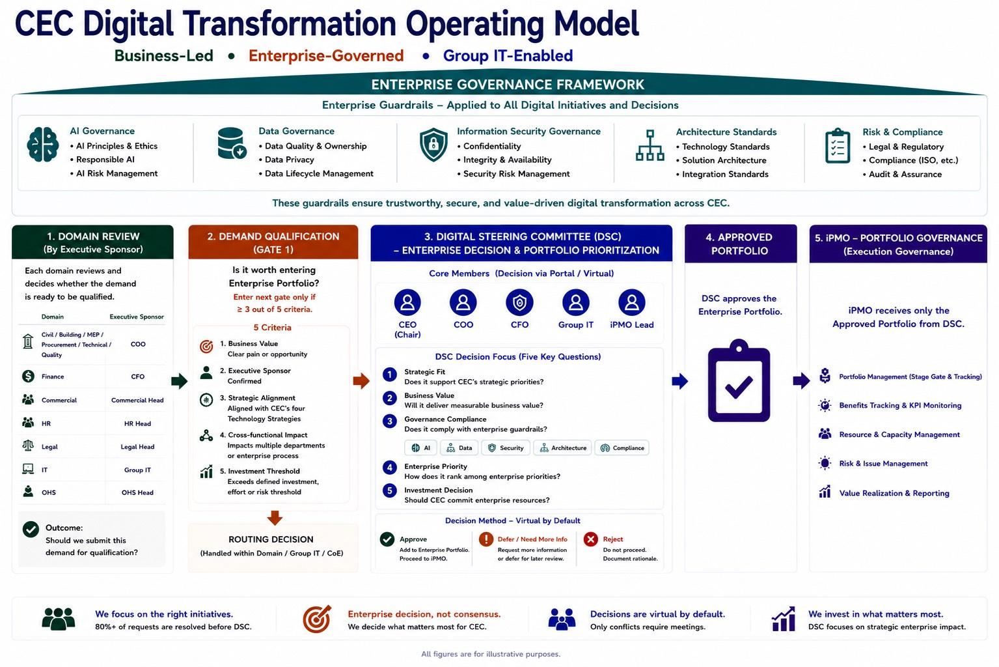
BSI 英國標準協會：ISO 27001 資訊安全 & ISO 42001 (AIMS) 人工智慧管理體系
通過 ISO/IEC 27001 資訊安全管理系統與最新 ISO/IEC 42001 人工智慧管理系統（AIMS）專業訓練考試合格，持有人姓名：廖倫豪，具備國際標準雙重治理背書。
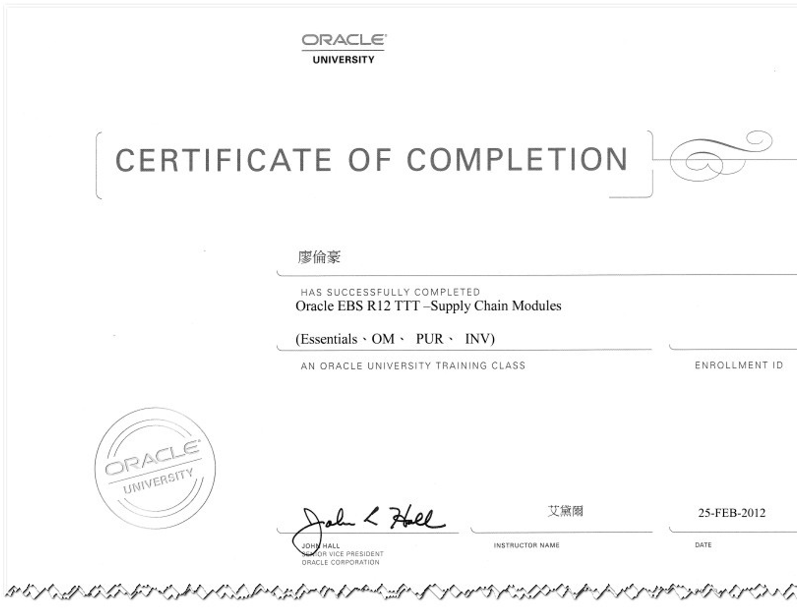
Oracle 官方認證與官方認證講師 (OCP & AI Summit Specialist)
持有 Oracle OCP 專業技術證照與 Oracle 官方認證講師授權資格，受邀出席 Oracle AI 高峰會擔任企業大數據與高可用架構專家。

Oracle E-Business Suite R12 供應鏈與製造執行模組官方結業認證
完成 Oracle 原廠 EBS R12 供應鏈管理（SCM）、製造執行與跨系統整合架構之官方高階培訓考核認證。
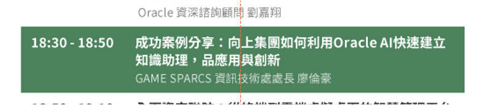
Oracle AI 技術論壇專題技術講師授權紀錄
受邀擔任 Oracle 官方技術講堂年度講師，向企業界分享大型企業資料庫高併發效能調校、HA/DR 災難復原與 AI 資料庫融合應用架構。
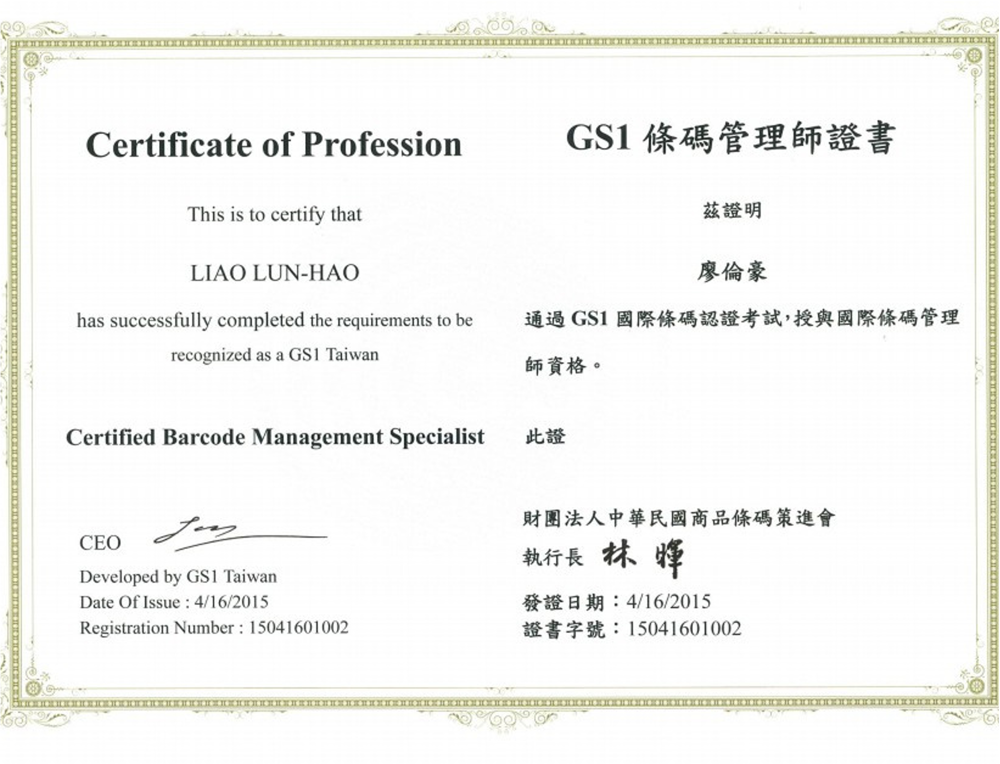
GS1 國際供應鏈條碼管理師專業認證
具備 GS1 國際條碼標準管理師資格，深諳全球供應鏈物流、追溯機制、製造工單批號管制與全球零售 B2B 串接標準規範。
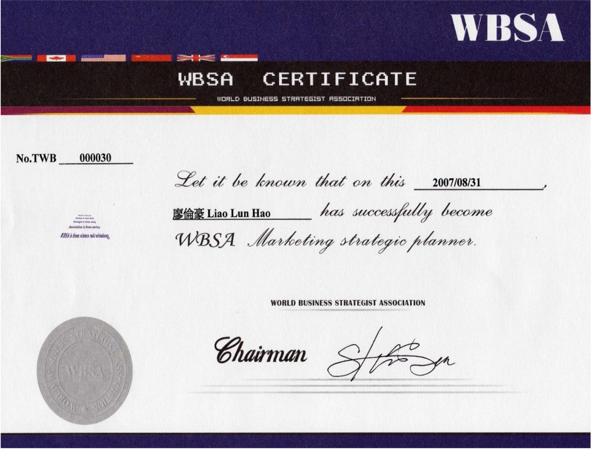
WBSA 行銷企劃師國際專業認證
通過 WBSA 國際商務企劃認證，具備高管商業戰略轉譯、市場競爭分析、SWOT 策略差距推演與產品生命週期全面治理能力。

台灣金融研訓院 金融科技力 (FinTech) 專業能力認證
通過金融研訓院金融科技力專業測驗認證，涵蓋分散式帳本架構、高併發交易結算、金流安全風控防護與金融法遵監理科技。
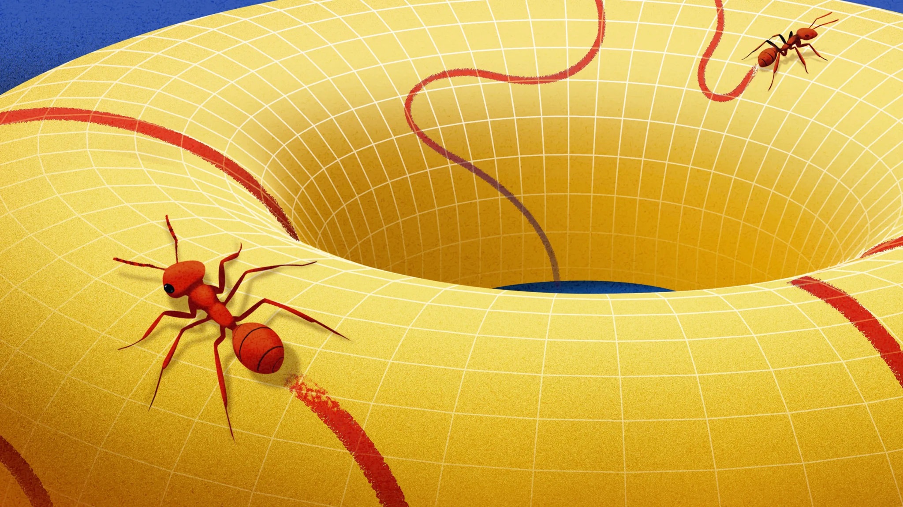
SCI 期刊論文（共同作者）：Reversible secret-image sharing with high visual quality
發表於 Springer SCI 國際權威期刊，提出具備高視覺品質之可逆秘密影像分享演算法。作者：Ching-Chiuan Lin, Lun-Hao Liao (廖倫豪), Kuo-Feng Hwang, Shih-Chieh Chen。DOI: 10.1007/s11042-012-1190-1。
國家圖書館博碩士學位論文典藏《整合系統的商業自助式入口網站植基於調適性服務導向架構資訊科技治理之研究》
朝陽科技大學 資訊科技管理研究所 博士學位論文，研究生：廖倫豪 (Howard Liao)。結合 ITIL V3 與 SOA 服務導向架構建立企業級入口網站 IT 治理模型，典藏代碼 106IKTC0183002。
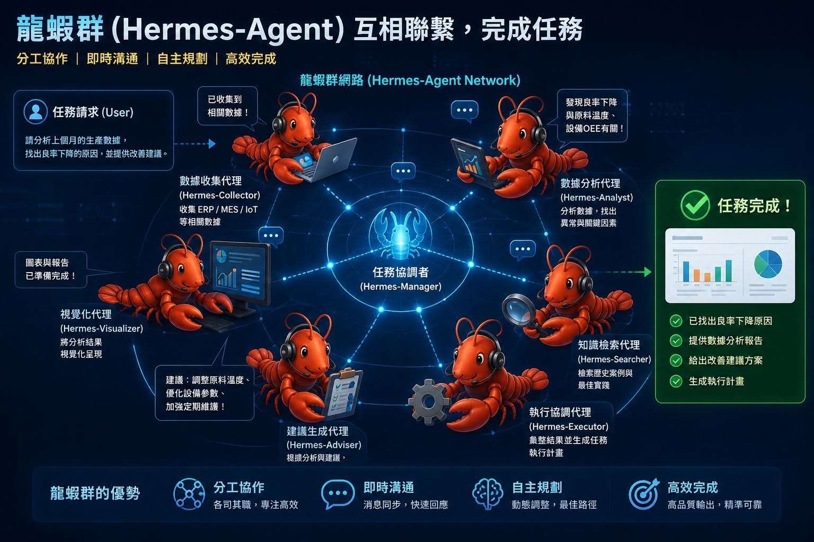
財團法人康善基金會 董事兼資訊長 (CIO) 數位公益、便當童話劇與 CSR 永續專案
廖倫豪博士擔任財團法人康善基金會董事兼資訊長 (CIO)，將企業級雲端技術、資安架構與 AI 專長導入醫療健康公益，建置兒童飲食宣導與公益防護網，落實 ESG 永續精神。
學歷、國際期刊論文與專利
嚴謹學術訓練與深厚科研底蘊，將演算法與 IT 治理理論落實於大規模企業實務。
🎓 學歷與論文典藏
博士論文《整合系統的商業自助式入口網站植基於調適性服務導向架構資訊科技治理之研究》，結合 ITIL V3 與 SOA 建立企業入口網站 IT 治理模型，獲國家圖書館臺灣博碩士論文知識加值系統永久典藏。
主修巨量資料探勘（Data Mining）、決策支援系統（DSS）與密碼學。期間擔任衛生署台中醫院「醫療雲端照護」產學合作計畫協同主持人。
📚 國際權威學術論文
論文名稱：Reversible secret-image sharing with high visual quality (DOI: 10.1007/s11042-012-1190-1)。提出具備高視覺品質之可逆秘密影像分享演算法，深獲密碼學與資安界引用。
論文名稱：Utilizing GIS and GPS in Designing a Trilingual Tourist APP。結合地理資訊系統 (GIS) 與全球定位系統 (GPS)，設計具備三語 (ZH/EN/JP) 支援之行動導覽服務架構。
高階面試與董事會預期問答 (FAQ)
針對 CIO、CISO、人資長與董事長關切之核心戰略議題，給予直擊痛點的精闢解答。
第一關 ｜ CIO、技術顧問、人資長 (技術深潛・架構解耦・製造落地)
在 S/4HANA 上線切換凍結期（Freeze Period）前，AI 平台嚴格聚焦於不碰 SAP 核心寫入的用例（如研發知識庫、IATF 16949 規範檢索、SPC 異常預警、發票單據 OCR）。所有資料介接一律走外部 API 閘道與 CDC（Debezium）異動捕獲，絕不在 SAP 核心內寫客製代碼。待 S/4HANA 正式穩定後，直接對接標準 Clean Core API。
任何 AI 用例開始前，必須具備事業群主管（BU PO）簽核、明確的驗收 KPI 與具體財務損益科目假設（如存貨周轉、報廢率、工時）；設立季度 AI 投資委員會，每季嚴格檢視進度，未達商業回報門檻之用例果斷熔斷退場。拒絕長達一年的巨石專案，堅持以 2 週迭代快速交付 MVP，並以標準化微服務資料產品規模化擴散。
模型閘道（如 LiteLLM）、推論引擎（vLLM）與資料湖倉（Kafka / Delta Lake）可採用成熟開源或商用方案以加速上線與降低前期成本；但涉及企業核心競爭力的資料契約、替代料推演演算法、齊套料動態規劃與領域提示工程（Prompt Engineering），必須由內部團隊牢牢掌握，確保自主掌控權與最低 TCO。
組建「AI 平台工程（網關/推論/MLOps）」與「業務嵌入式 AI 專家（各 BU 痛點攻堅）」雙軌梯隊；落實每季架構審查委員會（ARB），給予技術主管清晰的架構原則與決策權，並要求為每位主管建立接班人計畫；身為領軍者，在非成熟治理土壤中主動承受管理壓力，擔任戰略絕緣層與避震器，讓基層工程師在安全沙盒中專注攻堅，功成不必在我。
① 替代料智能選用：在物料短缺時秒級推演合格替代料件（BOM/AVL 相容性矩陣比對），防範產線停線；
② 齊套料動態規劃：打破只看靜態料帳盲點，結合在製品（WIP）即時動態流與進料檢驗（IQC）待檢狀態，消除產線半套呆滯與換模損失；
③ 工單智慧動態排程：透過運籌最佳化與邊緣 AIoT 數據，全自動平衡換模損耗、機台稼動率（OEE +18%）與交期優先級。
① 零負載 CDC：透過 Debezium 非同步監聽底層 Transaction Log，毫秒級入 Kafka，不對 S/4HANA 與 MES 造成任何查詢壓力；
② 湖倉三層結構：Bronze 原始層（ALCOA+ 唯一不可篡改審計憑證）、Silver 清洗層（去重、料號批號統一對齊）、Gold 主題層（每日營運結算、全生命週期正反向追溯、良率/SPC 管制圖）；
③ 全球範本複製：一次標準化建置，全球 112 座工廠與新廠快速按範本對接複製。
① 破除老臣防衛：以 ORID 焦點法化解地位/利益防衛，尊重現場資深師傅調機經驗，將其排障直覺結構化沉澱為數位知識庫，賦予其專家導師榮譽；
② 內部 AI PO 學院：培育各業務單位 Product Owner，以露骨商業算盤對賭，無明確效益指標不立項；
③ 四階漸進普及：主管先學、資訊部先試、以立竿見影成效（發票 OCR 審單節省 75% 工時、技術規章 RAG 問答解決率 +40%）建立信心，再向全集團各部門全面擴散。
第二關 ｜ 董事長、總裁與經管會 (商業回報・資本效益・全球治理)
依過往實績：智慧製造不良預測帶動良率提升 15%、多雲 FinOps 降低 30% 基礎設施費用、工單齊套料預警釋放數億元呆滯營運資金。到任 90 天內提出經財務長覆核確認的詳細財務模型，以 CEO Balanced Scorecard 與一頁式審查表定期呈報，杜絕算力黑洞，讓每一筆 AI 投資都有看得見的現金流回報。
各事業群均有自主維護的資料產品；海外新工廠一上線即自帶預測、齊套與追溯能力；員工將 AI 視為標準日常協同工具；全集團在 ISO 27001 與 42001 標準下穩健運轉，兼顧創新速度、營運韌性與法規安全。
我兼具高科技製造現場實戰（泓晏良率 +15%、鴻海中央資訊架構）、全球極限高可用雲端零停機（隆中連續 24+ 個月 100% Zero Outage、Google Cloud 官方案例）與企業專有模型網關合規落地（ISO 42001、Agentic 自動化 +55%）。能親手寫代碼與架構圖，也能用董事會聽得懂的商業損益語言對話。
① 難度分級動態路由（Smart Routing）：<15ms 難度打分（Tau=0.65），常規業務問答與 SOP 初稿走輕量模型，複雜多步推理才調用旗艦大模型，直接降本 20~40%；
② 高頻語意快取直通：Prompt Embedding 檢索向量快取（Cosine > 0.95 直通），零延遲且零額外 API 費用；
③ 影子資安閘道防禦：建立統一 API 入口與身分認證，機敏設計圖面與客戶規格不出廠（IP Clean Room 智財隔離），防止機密數據裸奔公網。
① 資料四級分級：公開／內部／機密／客戶機密四級，嚴格限制可進模型的資料邊界；
② 對抗防禦評測：上線前嚴格評測正確率、幻覺率（Agentic RAG > 95%）、資料偏差與防範 Prompt Injection 提示注入；
③ 工控 OT 隔離防護：遵循 IEC 62443 工業網路分區，AI 不直接越權控制設備，確保產線安全；
④ ALCOA+ 完整稽核軌跡：所有 Agent 呼叫、推理鏈與審查紀錄永久留存，符合國際客戶稽核與歐盟 AI Act 要求。
AI 的角色嚴格定義為「智慧建議與輔助決策」，絕非最終裁決者。涉及 ERP 物料異動、MES 製程參數修改、採購發單等關鍵高風險動作，系統強制產出清晰推理鏈與法規/規範版本號依據，必須經具備權限之工程師或主管進行電子簽章後方可寫入核心系統，形成安全可追溯閉環。
• 第 01–30 天（傾聽）：訪談 CIO、財務長與事業群總經理，盤點既有影子 AI 與資料資產，交付現況診斷報告；
• 第 31–60 天（定向）：以「效益 × 可行性 × 可重用」評分前 5 大用例財務假設，確立平台架構選型；
• 第 61–90 天（首批成果）：啟動蜂巢底座與模型網關 MVP，上線 2 個快速勝利用例（單據 OCR、SOP 知識庫），發布集團 AI 使用規範；
• 第 91–180 天（全面擴展）：對齊 Clean Core 標準 API 正式投產，示範廠進駐 A 級製造預測（替代料/齊套料/SPC），開辦第一期 AI PO 學院，讓新用例上線縮短為「週」級。
到任 180 天落實藍圖與到任指標
傾聽、定向、首批交付到全面擴展，嚴格對齊 ERP 切換與海外新廠投產節奏。
傾聽與現況盤點
- 訪談 CIO、財務長與事業群高階主管
- 清查影子 AI、既有資料庫與機台連網現況
- 確認 S/4HANA 切換時程與介接點
定向與架構選型
- 以效益 × 可行性 × 可重用評估用例組合
- 比較原生/雲端/地端三路線 TCO 成本
- 組建跨職能 AI 組織與人才梯隊
首批成果與 MVP
- 啟動蜂巢資料底座與模型網關 MVP
- 上線 2 個快速勝利用例（知識庫/OCR）
- 發布集團 AI 使用規範與資料分級
全面擴展與複製
- 平台對齊 S/4HANA 標準 API 正式投產
- A 級製造預測用例進駐示範廠試點
- 開設 PO 學院第一梯次（培育 30 位 PO）